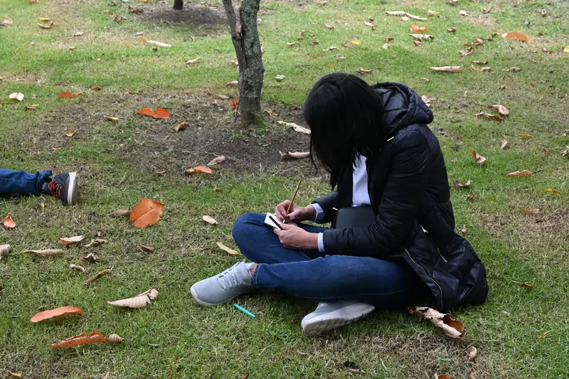
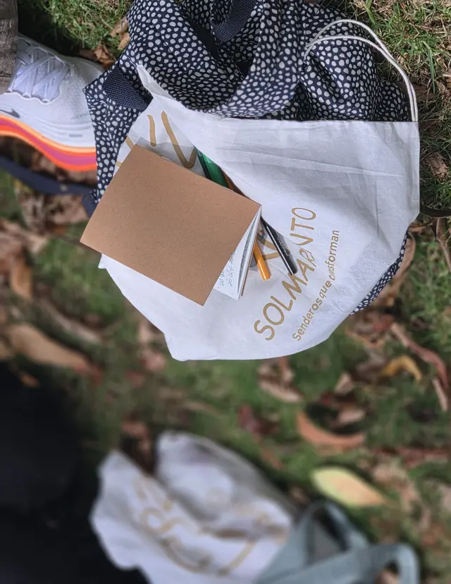

Un paseo con los sentidos
Una caminata guiada con atención plena por el Jardín Botánico de Bogotá, con la guía en tu audífono. Cada persona vive el recorrido a su ritmo, sin una dirección impuesta. Es un buen plan de sábado en la naturaleza de Bogotá, y no necesitas experiencia previa.
- Lugar
- Hora y duración ·
- Cupos
- Precio por persona
Qué vamos a hacer
Los ejercicios concretos y el orden del recorrido los guardamos como sorpresa. Lo que sí puedes saber desde ahora es cómo se vive:
-
Caminamos por el Jardín
Recorremos el Jardín Botánico a pie, en grupo, con actividades sencillas para estar en contacto con la naturaleza.
-
Cada práctica es una invitación
Las indicaciones llegan por tu audífono y tú decides cómo vivirlas. Nadie te marca una dirección.
-
Cerramos con un espacio propio
El cierre es introspectivo. No tienes que hablar si no quieres, y tampoco tienes que estar con el grupo si prefieres estar a solas.

Cómo funciona la guía por audífono
Cada práctica llega en tiempo real al audífono de cada persona del grupo. Yo transmito y tú escuchas, así que no tengo que elevar la voz.
El canto de los pájaros no se altera, y el entorno sigue en su silencio natural mientras caminas.

Qué incluye
- Entrada al Jardín Botánico
- Guía por audífono individual
- Agenda de bolsillo y lápiz de madera
- Colores para dibujar
- Tula de algodón estampada
Qué no incluye
- Refrigerio. El Jardín no permite el ingreso de alimentos, así que te recomendamos venir desayunado.
Qué traer
- Ropa cómoda
- Gorra para el sol
- Impermeable o chaqueta para la lluvia. El taller se realiza aunque llueva.
Próximas fechas
por persona. .
Cómo reservar
-
Escribes por WhatsApp
Elige tu fecha y pulsa su botón. Se abre el chat con el mensaje ya escrito.
-
Haces el pago
El cupo se confirma al recibir el pago.
-
Recibes la confirmación
Te confirmamos tu cupo. Si no puedes asistir, puedes ceder tu lugar a otra persona.
Preguntas frecuentes
¿Qué pasa si llueve?
El taller se realiza aunque llueva. Trae impermeable o una chaqueta para la lluvia.
¿Necesito experiencia en meditación?
No. Las prácticas son sencillas y las escuchas por tu audífono. Cada persona las vive a su manera.
¿Hay una edad mínima?
El taller está pensado para personas adultas. Si quieres venir con una persona menor de edad, escríbenos antes por WhatsApp.
[CONFIRMAR: respuesta sugerida, falta la edad mínima]
¿Qué tan exigente es físicamente?
Es una caminata tranquila por el Jardín, a un ritmo suave. Si tienes alguna condición física o de salud, cuéntanosla antes por WhatsApp.
[CONFIRMAR: respuesta sugerida]
¿Puedo cancelar, cambiar de fecha o ceder mi cupo?
Si no puedes asistir, puedes ceder tu lugar a otra persona. El cupo se confirma al recibir el pago.
[PENDIENTE: política de devolución o cambio de fecha]
¿Cuál es el punto de encuentro y cómo llego?
El taller es en el Jardín Botánico de Bogotá. Al confirmar tu cupo te enviamos el punto de encuentro exacto.
[PENDIENTE: punto de encuentro y cómo llegar]
¿Puedo ir con alguien?
Sí. Cada persona necesita su propio cupo, y hay . Escríbenos por WhatsApp e indícanos cuántas personas son.
[CONFIRMAR: respuesta sugerida]
¿Puedo llevar comida?
El Jardín no permite el ingreso de alimentos, y el taller no incluye refrigerio. Te recomendamos venir desayunado.
Reserva tu cupo
Son . Escríbenos por WhatsApp y cuéntanos qué fecha te queda bien.
Reservar por WhatsApp